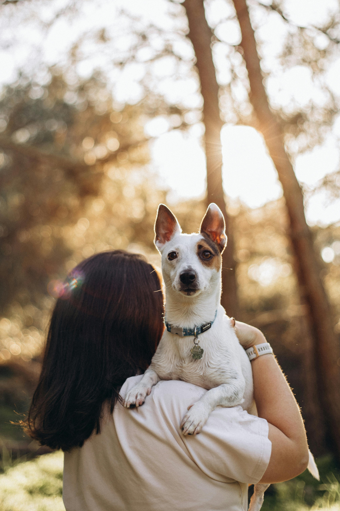
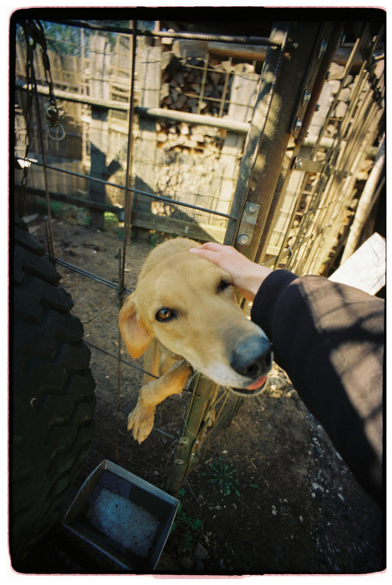

1,200+
Mascotas rescatadas
Protectoras de toda Espana rescatan a mas de 1200 perros y gatos de entornos inseguros y abandono.
Explora cientos de perros y gatos de protectoras de toda Espana y encuentra a tu companero ideal.

PETPAW es una organizacion sin fines de lucro dedicada a conectar todas las protectoras registradas de Espana y servir como plataforma de ayuda para ellas.

Mascotas rescatadas
Protectoras de toda Espana rescatan a mas de 1200 perros y gatos de entornos inseguros y abandono.
Adopciones completadas
Casi mil perros ya han encontrado un hogar definitivo a traves de nuestro programa de adopcion.
Mascotas disponibles
En este momento, mas de 700 perros y gatos esperan un hogar lleno de amor y los cuidados necesarios.

Listo para llevar a casa a tu nuevo mejor amigo? Explora, conoce, adopta y comienza hoy mismo tu viaje de amor y alegria.
Explora y encuentra la mascota perfecta segun tus necesidades.
Presiona Adoptar y enviaremos un correo a la protectora para conocerte.
Completa y rellena los documentos proporcionados por la protectora.
Comienza una nueva etapa con tu nuevo amigo peludo.
Necesitas ayuda o informacion con la adopcion, voluntariado o donaciones? Enviamos tu mensaje y nuestro equipo se pondra en contacto contigo.
902 90 87 56
petpaw.org@gmail.com
Calle Mendez Alvaro 32, 28045, Madrid